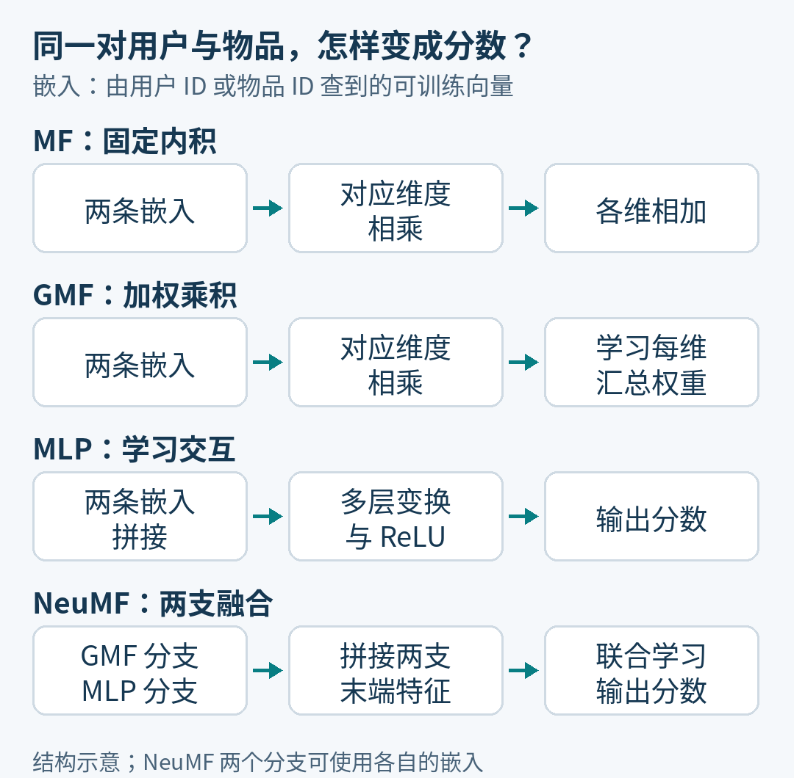

神经协同过滤，怎样检验非线性交互的价值
研究想法压力测试 002 · 2026 年 10 月 5 日 · 阅读约 10 分钟
本期检验一句话：只用用户 ID 和物品 ID 做隐式反馈推荐时，NeuMF 学到的非线性交互，能否比充分调好的内积式矩阵分解带来更好的 Top-10 排序？
这是 He 等人《Neural Collaborative Filtering》（WWW 2017）提出、Rendle 等人 2020 年直接重新检验的真实问题。下文把原论点进一步变成可执行的比较；“充分调好”需要明确预算，不能靠一句形容词保证。原论文 · 直接重评
相较上一期，本期增加的是同一任务、同一评价对象上的直接复核。全文独立阅读即可；本期没有运行训练实验。
一对用户与电影，怎样变成一个分数
先固定任务：有一张“谁看过哪部电影”的记录表，模型要给这个用户尚未看过的电影排序。这里的隐式反馈，指观看、点击之类行为；没出现的记录不自动等于不喜欢。两篇论文比较的输入只有用户和物品的身份编号，没有加入电影文本、用户画像或长行为序列。
矩阵分解（MF）为每个用户和物品各存一条可训练向量，称为嵌入。评分时，把两条向量对应位置相乘，再把结果相加，这就是内积。训练调整向量，使已观察交互通常得分更高，抽到的未观察样本通常得分更低；正则化则限制参数过度贴合训练数据。
例如，某次训练后的二维用户向量是（1，2），电影 A 是（2，1），电影 B 是（1，2）。A 得到 1×2＋2×1＝4，B 得到 1×1＋2×2＝5，于是 B 排在 A 前。这些是便于手算的示意值，不是论文数据；也不用把两个坐标硬解释成“喜剧”“动作”。关键是：匹配规则固定，向量本身会学习。
NCF 想多学一部分：怎样组合这两条向量。它的多层感知机（MLP）把用户和物品向量首尾拼起来，经多层加权变换和 ReLU 得分。ReLU 保留正数、把负数变成零，让不同输入可以激活不同组合规则。相比固定乘加，这条路径有机会表达更复杂的匹配关系。机会能否变成测试集收益，还取决于样本与训练是否足以学好这些关系。
原文还设计了广义矩阵分解（GMF）：仍然逐维相乘，但学习每一维的汇总权重。NeuMF 再把 GMF 与 MLP 的末端特征拼接，联合学习输出。两个分支可以有各自的嵌入；预训练版先分别训练两支，再合并微调。因此 NeuMF 同时包含乘积路径和非线性路径，不能当成“把 MF 全部换掉”。


这里有个有用的区别：GMF 的逐维权重可以吸收到某一侧嵌入里，所以仅看内积打分的函数形式，它不一定比 MF 多表达了什么；正则化、初始化与训练过程却可能不同。要判断新增非线性有用，就要把“模型能表示什么”和“这次训练得到了什么”分开。
原论文的支持证据，支持到哪一步
两篇论文都研究 MovieLens-1M 与 Pinterest 的二值交互数据，按用户留出最后一次交互用于测试，并在一个较小的候选集合里排序。这里不是预测星级分数，也不是对全站所有电影排序。
HR@10 是“留出的那个正例有没有进入前十”的用户比例。NDCG@10 还奖励更靠前的位置：对只有一个留出正例的用户，排第 1 得 1，排第 3 得 0.5，排第 7 约得 0.333，落到前十之外得 0，再对用户取平均。这样，同一部留出电影从第 7 升到第 3，HR 不变，NDCG 会提高。两指标回答的细节不同。
He 2017 的图 4 显示，NeuMF 在其所测配置下优于 GMF、MLP 及其他基线。表 2 还给出预训练的帮助：MovieLens、64 个 predictive factors 的 NeuMF，HR/NDCG 从不预训练的 0.705/0.426，变为预训练的 0.730/0.447。这是融合方案及其训练配方有效的正面证据；尚不能把全部差额单独归给非线性。原文图 3—4、表 2
“64”尤其容易读错：它是原表的 predictive factors 配置，不等于每端总嵌入维数。按重评附录 A.3 对原表的换算，这个 NeuMF 配置每端两分支嵌入合计为 192 维。若只拿 64 维 MF 对照，就没有对齐嵌入容量。
直接重评：把内积基线认真调好
Rendle 2020 复用原公开切分与评估代码，重新调整带偏置、L2 正则和 logistic loss 的 MF。logistic loss 在这里是正负二分类的交叉熵。下面采用重评的 d=192 对比口径；NeuMF 是原论文的预训练结果，MF 是重评结果。这里并非严格等总参数：MF 实现的 d 还包含一维偏置，NeuMF 则另有网络层参数。
| 数据集 / 模型 | HR@10 | NDCG@10 |
|---|---|---|
| MovieLens：NeuMF | 0.730 | 0.447 |
| MovieLens：MF | 0.7294 | 0.4523 |
| Pinterest：NeuMF | 0.877 | 0.552 |
| Pinterest：MF | 0.8895 | 0.5794 |
MovieLens 上，MF 的 HR 略低、NDCG 更高；Pinterest 上，MF 两项都更高。不能写成“MF 全面获胜”，但这已直接削弱了“原有提升证明学习非线性交互优于内积”的解释：同一任务上，内积本身能达到很强的结果。重评图 2、表 1、附录 A.3
它也没完成最后一层归因。重评主要重新调 MF，神经模型数字沿用原论文，双方没有在统一资源上限下重新调参。训练负例数量、初始化、轮数和偏置项等配置也有差别。因而最稳妥的结论是：原对照不足以把收益归于非线性；“所有条件下 MF 都更好”同样没有被证明。
哪个最小实验，能让解释继续往前走
以下是提案，未执行。最便宜的起点是 MovieLens 一个数据集；先把可比条件做好，再考虑扩到 Pinterest。
第一步甚至不用训练：冻结公开数据切分、测试候选文件和指标实现，检查四个模型是否真的看见同一份数据。给上面的“第 1、3、7、11 名”写指标单元测试，确认结果分别是 HR 1、1、1、0，以及 NDCG 1、0.5、约 0.333、0。候选排序并列时，也用同一规则处理。
这项检查有实际对象：两篇正文都写过 100 个测试负例，但原仓库 README 与抽查的公开文件使用 99 个负例，再加入 1 个正例。复现时应锁定文件与代码版本，以实际候选文件为准，不能只抄论文中的数量。原作者仓库
第二步，先比较 MF 和 NeuMF。从公开训练部分另外留出相同的验证集，只用它挑超参数、轮数和最终候选。双方使用同一二元交叉熵、同一训练负采样器与样本流，并对齐偏置项；不要把原脚本每轮挑最好测试分数的做法带入新比较。原论文报告用验证集选其他超参数，不能因此把论文所有调参一概说成测试集泄漏。
负采样也值得对代码：原 NeuMF 实现会排除训练集中已知的正例；Google 的 MF 示例允许抽中这些物品。两者都叫“均匀采样”，实际训练分布仍不同。这个差别必须固定，才有资格把结果变化归于模型。Google MF 实现
第三步，提前写好预算与判据。比如每个模型允许 12 组配置、每组最多 256 轮，NeuMF 的预训练也计入总额；这里的数字只是小规模提案，不是论文原有的公平预算。本实验把实际每端嵌入总维数统一为 192，偏置单列，并分别报告额外网络参数、训练用时与预测用时；需检查代码实际张量尺寸，不能把两仓库的同名参数当成同一口径。相同配置数、轮数和嵌入维数，不等于相同计算成本。若研究目标是固定耗时下选模型，再单独做同硬件、同总时长的比较，不混用两种结论。
若 NeuMF 在验证集上显示优势，再加两个有解释力的对照：去掉 MLP 的 GMF，检查新增分支；以及两个独立 MF 的集成，检查“多一路预测加预训练”能解释多少增益。集成的两组嵌入每端合计也设为 192 维，全部分支训练与调参成本入账。GMF 是 NeuMF 的组成部分，去掉分支还会减少容量，须结合等容量对照解释；MF+MF 则用于控制集成收益。
对照与配置都在验证集锁定后，以 5 个训练种子复训，测试集仅用于最后一次统一评估，不再据此追加消融。主要指标预先定为 NDCG@10，HR@10 为辅助护栏；报告各次结果、均值，并按同一用户配对估计差值的不确定性，同时单列训练种子间波动。不要把“最好一个种子”与“另一模型平均值”相比。
怎样决定继续、修改或放下
- 继续：NeuMF 对充分调好的 MF 仍超过事先约定的最小有意义差值，HR 护栏通过；同时胜过已锁定的等资源 MF 集成，再去第二个数据集验证
- 修改：优势只在预训练版出现，或与 MF 集成相近。把下一问改成“初始化或集成带来了多少收益”，暂不归因于非线性交互
- 放下当前主张：在约定预算内，NeuMF 无稳定增益，或优势小到不值得额外成本。停止为这组条件追加复杂度；这不是对所有神经推荐模型的判决
如果差值的不确定区间仍很宽，结论是证据不足，不应把“不显著”翻译成“两者一样”。
本期边界很集中：这是 ID-only、采样候选、离线 Top-10 的比较。它不直接裁决包含上下文、内容或长序列的 CTR 模型，也不提供线上点击或收入结论。可迁移的是检验顺序：把强基线、训练配方和新增机制拆开，再问复杂度买到了什么。
读完后可以留一个判断题：如果 NeuMF 胜过单个 MF，却与两个 MF 的等资源集成持平，你目前有证据支持“非线性交互更强”，还是只支持“这一组合方案更强”？答案决定下一次消融该改哪一处。